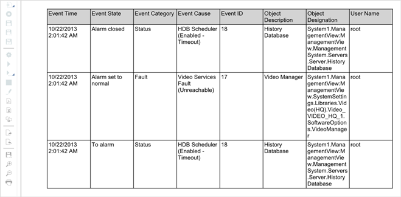

PDF Report Format
After executing a Report Definition manually or automatically, you can view and save the report as a PDF document.
A PDF document contains all the report elements of the Report Definition with output data and sorting applied.
It also displays the special formatting applied to Report Definition elements (such as tables, plots, keywords, and so on).
The PDF document can have a maximum of 500 pages, however if the number of pages exceeds 500 the document splits into two.
You can add digital signatures or watermark text on the generated pdf reports using the Adobe Acrobat DC software (not included).
You can either view the PDF document or the split documents in the Report Management section under the Report snapshot when you
generate the report manually or you can locate them in the folder configured in the Report Output Definition dialog box when you generate the report automatically.
Reports do not support TrueType collections for PDF generation.
To generate a PDF document for Asian languages, you must select TrueType fonts which support Asian characters in the Report Definition, for example, Arial Unicode MS.
If the PDF document generated for operating procedure does not display any data, ensure the following:
- Check the applied filters and make corrections (if required)
- A graphics containing the object in the event is available
